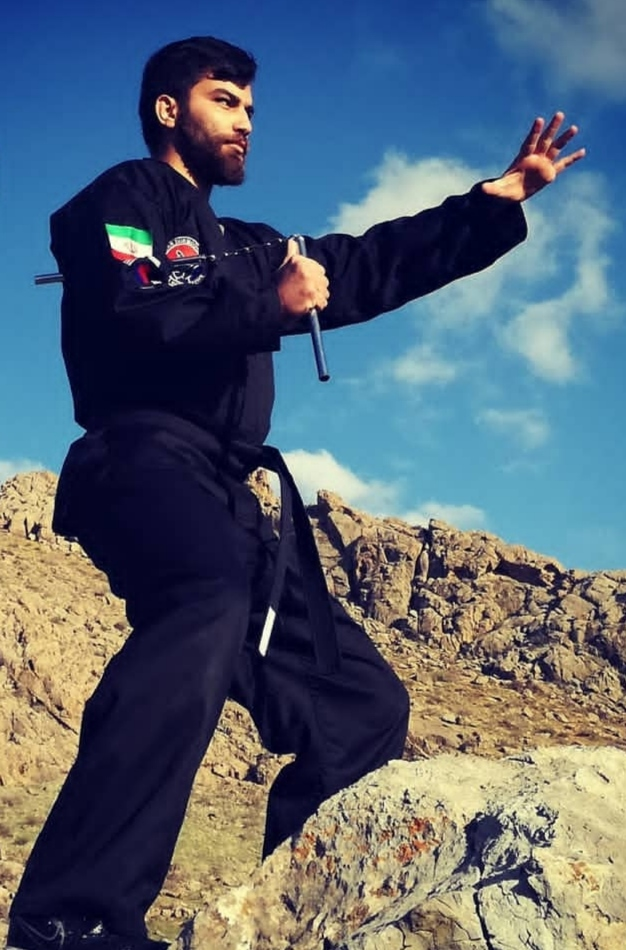

گالری تصاویر


باشگاه ما مجموعهای حرفهای برای یادگیری رزمی، بدنسازی و افزایش آمادگی بدنی است. با مربی حرفهای و سالن مجهز، شما را به بهترین نسخه خود تبدیل میکنیم.

استاد رضایی در سال ۱۹۹۶ در شهرستان سنقر و کلیایی، استان کرمانشاه، متولد شد. علاقه ایشان به هنرهای رزمی از دوران کودکی و با تماشای فیلمهای رزمی آغاز شد. فعالیت ورزشی خود را ابتدا با کیکبوکسینگ شروع کرد و پس از مدتی نیز در رشته بوکس به تمرین پرداخت.
ایشان همواره به دنبال هنری رزمی بود که مجموعهای کامل از فنون دفاع شخصی، مبارزه و اصول اخلاقی را در خود داشته باشد. این جستجو سرانجام او را با هاپکیدو آشنا کرد؛ سبکی که آن را تحقق رؤیای خود میدانست.
استاد رضایی تمامی آموزشهای تخصصی هاپکیدو را زیر نظر استاد مرتضی پیاهو فرا گرفت و در سال ۲۰۱۹ تصمیم گرفت این سبک اصیل و مؤثر را به شهرستان سنقر و کلیایی معرفی کند.
ایشان دارای بیش از ۱۱ سال سابقه فعالیت در هنرهای رزمی و دارنده کمربند مشکی دان ۳ هاپکیدو است و تاکنون هنرجویان بسیاری را با تأکید بر اخلاق، احترام و انضباط تربیت کرده است.
استاد رضایی شاگردی استاد مرتضی پیاهو را یکی از بزرگترین افتخارات زندگی خود میداند و همواره تلاش کرده است شیوههای اخلاقی، رفتاری و آموزشی استاد خود را به شاگردانش منتقل کند.
از دیدگاه ایشان، اخلاق مهمترین اصل در هنرهای رزمی است. همچنین وفاداری، احترام، مسئولیتپذیری و نظم را از مهمترین ویژگیهای یک هنرجوی واقعی میداند.
علاوه بر فعالیتهای ورزشی، استاد رضایی در حرفه معلمی نیز مشغول به تدریس ادبیات است و با عشق و علاقه به آموزش نسل جوان میپردازد.
برنامههای آموزشی ایشان ضمن پایبندی به اصول اصیل هاپکیدو، با روشهای نوین آموزشی طراحی شده تا هنرجویان بتوانند در محیطی پویا و حرفهای رشد کنند.
مناسب برای تمام سنین همراه با سبک شوتوکان و کنترلی.
آموزش اصولی با تمرکز بر سرعت و دقت.
قدرت، استقامت و تکنیک در سطح حرفهای.
برنامههای تمرینی ویژه برای افزایش قدرت و لاغری.
شماره تماس: 09180629262